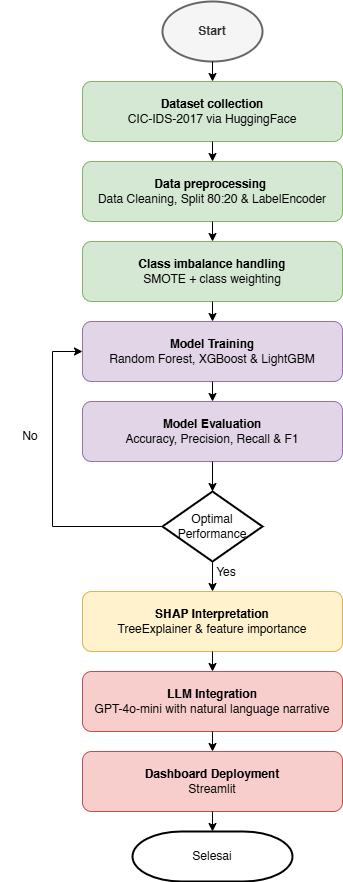
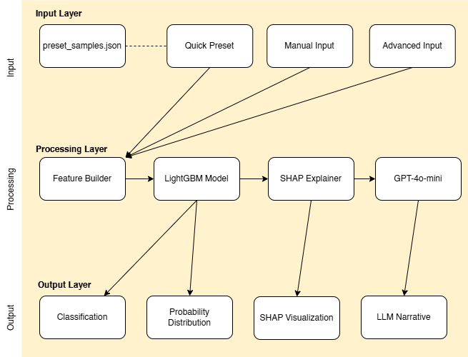
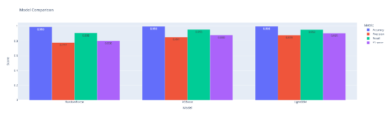

Intrusion Detection Systems (IDS) based on machine learning face interpretability limitations because most models are black-box, making it difficult for security analysts to understand classification decisions. This study developed an IDS using three machine learning algorithms, Random Forest, XGBoost, and LightGBM, on the CIC-IDS-2017 dataset containing 2,830,743 network traffic instances across 15 classes. Methods include SMOTE for class imbalance handling, SHAP TreeExplainer for model interpretability, and integration of GPT-4o-mini Large Language Model (LLM) with a selective explanation approach, where the LLM is invoked only once at the end of the pipeline as a SHAP interpreter. LightGBM achieved the best performance with a Macro F1-score of 0.91, surpassing XGBoost (0.88) and Random Forest (0.80). SHAP stability evaluation demonstrated Jaccard Similarity of 1.000 for three attack classes and Spearman Rank Correlation above 0.995 across all classes, confirming reliable and reproducible explanations. LLM narrative quality achieved average Completeness of 95%, Fluency of 4.75/5, and Conciseness of 4.50/5, with all five qualitative rubric criteria met across four test scenarios. Dashboard usability evaluation showed all six checklist aspects fulfilled. The system was deployed as an interactive Streamlit dashboard on Hugging Face Spaces. The selective explanation approach successfully integrates SHAP and LLM efficiently, producing natural language explanations more informative and accessible than SHAP output alone, supporting Hypothesis H1.
Keywords: Intrusion Detection System, Machine Learning, LightGBM, SHAP, Large Language Model, Explainable AI, Selective Explanation
SDG: 9 (Industry, Innovation and Infrastructure)
INTRODUCTION
Network security has become a critical aspect as cyberattacks grow in frequency and sophistication. Intrusion Detection Systems (IDS) are essential components of network security infrastructure, tasked with monitoring traffic to detect suspicious activities. According to the IBM Cost of a Data Breach Report 2025, the global average cost of a data breach reached USD 4.44 million in 2025, while the United States recorded an all-time high of USD 10.22 million, a 9% increase over the previous year (IBM, 2025). These figures underscore the escalating financial consequences of inadequate network security, reinforcing the critical need for reliable and interpretable intrusion detection systems.
Machine learning has significantly advanced IDS capabilities beyond the limitations of signature-based approaches. Maseer et al., (2021) conducted a comprehensive benchmark of 31 machine learning models on the CICIDS2017 dataset, demonstrating that ensemble boosting algorithms consistently deliver the best performance across diverse attack categories. However, most of these models are black-box in nature, making it difficult for security analysts to understand the reasoning behind each detection decision, a critical requirement for trust and actionability in operational settings.
Explainable Artificial Intelligence (XAI) has emerged as a key approach to improving the interpretability of black-box models. Salih et al., (2025) emphasize that the success of machine learning models must be accompanied by the ability to explain how, why, and when a model produces a particular decision. SHAP (SHapley Additive exPlanations) is among the most widely used XAI methods due to its strong theoretical foundation in cooperative game theory and its ability to provide consistent individual-level explanations Naudot et al., (2025). Although SHAP can quantitatively identify feature contributions, its output, numeric values and bar charts, remains difficult for non-technical analysts to interpret.
Large Language Models (LLMs) offer the ability to generate human-readable explanations. Khediri et al., (2024) combined machine learning with SHAP and LLM to improve IDS interpretability, but their approach invokes the LLM on all prediction outputs, raising computational efficiency concerns. Houssel et al., (2026) developed the eX-NIDS framework that applies an LLM to every case in the IDS pipeline, but the high per-call cost limits its applicability in real-world deployments. Zeng & Zhu, (2026) further demonstrate that integrating SHAP with LLMs can meaningfully improve the understandability of model decisions for end users.
This study aims to: (1) develop a machine learning-based IDS using three algorithms (Random Forest, XGBoost, LightGBM) on the CIC-IDS-2017 dataset; (2) compare the performance of all three algorithms; (3) apply SHAP TreeExplainer for model interpretability; and (4) integrate GPT-4o-mini via a selective explanation approach to produce efficient natural language explanations. The research hypothesis states that explanations generated through the integration of SHAP and LLM have a higher degree of clarity and relevance than SHAP-only explanations (H1). This work contributes to advancing XAI for network security while providing a more transparent and accessible IDS dashboard for analysts of varying technical backgrounds.
RESEARCH METHODOLOGY

Research figure
Figure 1 Research Pipeline Flowchart
This research employs an experimental approach using the CIC-IDS-2017 dataset accessed via HuggingFace (bvsam/cic-ids-2017, subset machine_learning). The dataset contains 2,830,743 instances with 78 numerical features across 15 classes including BENIGN and 14 attack types. The research pipeline consists of six stages as described below.

Research figure
Figure 2 System Architecture of the IDS Pipeline (Three-Layer Design)
Data Preprocessing. Missing values were replaced using column medians, and infinite values were converted to NaN. Labels were encoded using LabelEncoder. The dataset was split 80:20 using stratified sampling to ensure proportional class distribution across training and test sets.
Class Imbalance Handling. SMOTE with sampling_strategy='not majority' and k_neighbors=3 was applied only to training data to prevent data leakage. Balanced class weights were also applied during training. After balancing, training data increased from 2,264,594 to 27,277,155 instances.
Model Training. Three algorithms were trained and compared: Random Forest (n_estimators=100, max_depth=15), XGBoost (n_estimators=120, GPU acceleration, eval_metric='mlogloss'), and LightGBM (n_estimators=120, learning_rate=0.05, num_leaves=31). All models used balanced sample weights.
SHAP Interpretability. SHAP TreeExplainer was applied to the selected best model to compute per-feature contribution values for each prediction. Stability was validated using Jaccard Similarity and Spearman Rank Correlation across five random subsets of 300 samples each.
LLM Integration. GPT-4o-mini was integrated using a selective explanation approach: the LLM is called only once at the end of the pipeline after prediction and SHAP computation are complete. The top SHAP features, prediction label, and confidence score are passed as a structured prompt to generate a natural language explanation in Indonesian.
System Deployment. The complete pipeline was deployed as an interactive Streamlit dashboard on Hugging Face Spaces (https://huggingface.co/spaces/aisyahn/ids-dashboard) featuring Quick Preset, Basic Input, Advanced Input, SHAP visualization, and LLM narrative output.
RESULTS AND DISCUSSION
Model Performance Comparison
All three models were evaluated on 566,149 test instances. Macro-average F1-score was used as the primary metric given class imbalance, following the recommendation of Maseer et al., (2021).
Table 1 Model Performance Comparison
Metric
Random Forest
XGBoost
LightGBM
Best Model
Accuracy
0.99
1.00
1.00
LightGBM/XGBoost
Macro Precision
0.78
0.85
0.88
LightGBM
Macro Recall
0.91
0.96
0.95
XGBoost
Macro F1-Score
0.80
0.88
0.91
LightGBM
Weighted F1-Score
0.99
1.00
1.00
LightGBM/XGBoost
Figure 3 Performance Comparison of Random Forest, XGBoost, and LightGBM

Research figure
LightGBM was selected as the primary model based on its highest Macro F1-score (0.91), best balance between precision (0.88) and recall (0.95) on minority classes, and computational efficiency through GOSS and EFB techniques. Random Forest struggled particularly on Bot (F1=0.18) and Web Attack classes, while LightGBM achieved F1=0.66 for Bot and 0.74 for Web Attack Brute Force, significant improvements. The persistent weakness on Web Attack classes (F1<0.75 across all models) is attributed to high feature overlap between web attack traffic and benign flows at the network flow level, a limitation inherent to flow-based NIDS as noted by Sharafaldin et al., (2018).
SHAP Interpretability Analysis
SHAP stability was evaluated using Jaccard Similarity and Spearman Rank Correlation across five random subsets of the test set. DoS Hulk, PortScan, and Bot achieved perfect Jaccard Similarity of 1.000 (σ=0.000), while BENIGN achieved 0.867, above the ≥0.8 reliability threshold established by Airani et al., (2025) and Pawlicki, (2023). All classes achieved Spearman correlation above 0.995, confirming that feature importance rankings are highly stable and reliable across different sample subsets.
Table 2 SHAP Stability Results (Top-5 Features, 5 Random Subsets)
Mean Signed SHAP analysis revealed domain-consistent patterns across all classes. For BENIGN traffic, Init_Win_bytes_forward (+1.648) and Destination Port (+1.315) showed the highest positive contributions, reflecting normal TCP window negotiation and standard service port usage. For DoS Hulk, Fwd IAT Std dominated with +3.227, consistent with high inter-packet timing variation caused by flooding. PortScan was characterized by Flow IAT Min (+1.114) reflecting minimal probe intervals, while Bot traffic was identified primarily through Destination Port (+0.289), consistent with ARES botnet C2 communication to specific ports as documented by Sharafaldin et al., (2018).
LLM Narrative Evaluation
LLM narrative quality was evaluated using quantitative metrics adapted from Zytek et al., (2024) and qualitative rubric assessment. Table 3 presents quantitative results across four test scenarios.
Table 3 Quantitative Evaluation of LLM Narratives per Scenario
Scenario
Confidence
Accuracy
Completeness
Fidelity
Fluency
Conciseness
BENIGN
99.99%
40%
100%
0.50
5
4
DoS Hulk
99.99%
60%
100%
1.00
5
5
PortScan
89.85%
60%
80%
N/A
4
4
Bot
99.13%
80%
100%
1.00
5
5
Average
-
60%
95%
-
4.75
4.50
Completeness reached 100% in three of four scenarios, with PortScan scoring 80% due to implicit rather than explicit feature references. Fidelity reached 1.00 for DoS Hulk and Bot, confirming that described feature directions matched SHAP signs. The PortScan scenario received N/A for Fidelity because no top-SHAP features were explicitly named in the narrative. Average Fluency (4.75/5) and Conciseness (4.50/5) indicate consistently readable and well-structured narratives. Lower Accuracy on BENIGN (40%) reflects LLM tendency to select more intuitively interpretable features rather than strictly following SHAP ranking order, a characteristic of LLMs that optimize narrative comprehensibility over strict technical accuracy.
Table 4 Qualitative Evaluation Results using Five-Criteria Rubric
Aspect
Criteria
Result
Information Clarity
Natural language without excessive technical jargon
✓ Met across all 4 scenarios
Contextual Appropriateness
Narrative consistent with SHAP values and predicted attack type
✓ Met; Bot scenario specifically mentions port 8080 consistent with ARES botnet pattern
Feature contribution direction reflected in narrative
✓ Met; attack features described as suspicious indicators, BENIGN features as normal patterns
The selective explanation approach demonstrated clear efficiency advantages. Unlike Khediri et al., (2024) who invoke the LLM for every prediction output, and Houssel et al., (2026) who apply LLM to every case in eX-NIDS, this approach calls the LLM only once at the end of the pipeline per analysis session. This design fundamentally reduces API call overhead while maintaining explanation quality comparable to full-pipeline approaches. The comparative evaluation (Table 5) confirms that SHAP+LLM integration substantially surpasses SHAP-only output across all interpretability dimensions.
Table 5 Comparative Evaluation: SHAP Only vs. SHAP + LLM
Evaluation Aspect
SHAP Only
SHAP + LLM
Information Clarity
Numeric values and charts; hard to read for non-technical users
Clear, contextual Indonesian narrative
Contextual Appropriateness
Reflects feature contributions mathematically
Narrative tailored to detected attack type
Action Recommendation
Not available
Available and specific per attack type
Computational Efficiency
More efficient (no API call)
Efficient; LLM called once at pipeline end
Non-technical Accessibility
Low; requires SHAP expertise
High; narrative directly understandable by analysts
CONCLUSION AND RECOMMENDATION
This study successfully developed an interpretable machine learning-based IDS on the CIC-IDS-2017 dataset integrating SHAP TreeExplainer and GPT-4o-mini LLM through a selective explanation approach. LightGBM achieved the highest Macro F1-score of 0.91, outperforming XGBoost (0.88) and Random Forest (0.80), consistent with Maseer et al., (2021) finding that boosting ensembles consistently outperform on CICIDS2017. SHAP stability analysis confirmed explanation reliability with Jaccard Similarity reaching 1.000 for three attack classes. LLM narrative evaluation demonstrated average Completeness of 95%, Fidelity of 1.00 on two scenarios (DoS Hulk and Bot), Fluency of 4.75/5, and Conciseness of 4.50/5, with all five qualitative rubric criteria met across test scenarios. Dashboard usability evaluation confirmed all six checklist aspects fulfilled. Hypothesis H1 is accepted: SHAP+LLM integration produces explanations with significantly higher clarity and relevance than SHAP output alone.
Future research directions include: (1) exploring hybrid flow-based and payload-level features to improve Web Attack detection (currently F1<0.75); (2) conducting structured expert evaluations and user studies with non-technical security analysts; (3) testing on more recent datasets to assess generalization to contemporary attack patterns; (4) exploring real-time streaming architectures using Apache Kafka for near-real-time detection; and (5) investigating local LLM deployment using models such as LLaMA or Mistral to eliminate external API dependencies and improve data privacy.
REFERENCES
Airani, S. S., Sinha, S., Bhat, S. R., & K, D. (2025). Stability and Consistency Analysis of SHAP and LIME Explanations Across Machine Learning Models. 2025 5th International Conference on Emerging Research in Electronics, Computer Science and Technology (ICERECT), 1–6. https://doi.org/10.1109/ICERECT65215.2025.11378102
Houssel, P. R. B., Layeghy, S., Singh, P., & Portmann, M. (2026). eX-NIDS: A framework for explainable network intrusion detection leveraging Large Language Models. Computers and Electrical Engineering, 129, 110826. https://doi.org/10.1016/j.compeleceng.2025.110826
IBM. (2025). Cost of a Data Breach Report 2025. https://www.ibm.com/reports/data-breach
Khediri, A., Slimi, H., Yahiaoui, A., Derdour, M., Bendjenna, H., & Ghenai, C. E. (2024). Enhancing Machine Learning Model Interpretability in Intrusion Detection Systems through SHAP Explanations and LLM-Generated Descriptions. 2024 6th International Conference on Pattern Analysis and Intelligent Systems (PAIS), 1–6. https://doi.org/10.1109/PAIS62114.2024.10541168
Maseer, Z. K., Yusof, R., Bahaman, N., Mostafa, S. A., & Foozy, C. F. M. (2021). Benchmarking of Machine Learning for Anomaly Based Intrusion Detection Systems in the CICIDS2017 Dataset. IEEE Access, 9, 22351–22370. https://doi.org/10.1109/ACCESS.2021.3056614
Naudot, F., Sundqvist, T., & Kampik, T. (2025). llmSHAP: A Principled Approach to LLM Explainability (arXiv:2511.01311). arXiv. https://doi.org/10.48550/arXiv.2511.01311
Pawlicki, M. (2023). Towards Quality Measures for xAI algorithms: Explanation Stability. 2023 IEEE 10th International Conference on Data Science and Advanced Analytics (DSAA), 1–10. https://doi.org/10.1109/DSAA60987.2023.10302535
Salih, A. M., Raisi-Estabragh, Z., Galazzo, I. B., Radeva, P., Petersen, S. E., Lekadir, K., & Menegaz, G. (2025). A Perspective on Explainable Artificial Intelligence Methods: SHAP and LIME. Advanced Intelligent Systems, 7(1), 2400304. https://doi.org/10.1002/aisy.202400304
Sharafaldin, I., Habibi Lashkari, A., & Ghorbani, A. A. (2018). Toward Generating a New Intrusion Detection Dataset and Intrusion Traffic Characterization: Proceedings of the 4th International Conference on Information Systems Security and Privacy, 108–116. https://doi.org/10.5220/0006639801080116
Zeng, X., & Zhu, K. (2026). Enhancing the Interpretability of SHAP Values Using Large Language Models (arXiv:2409.00079). arXiv. https://doi.org/10.48550/arXiv.2409.00079
Zytek, A., Pido, S., Alnegheimish, S., Berti-Équille, L., & Veeramachaneni, K. (2024). Explingo: Explaining AI Predictions using Large Language Models. 2024 IEEE International Conference on Big Data (BigData), 1197–1208. https://doi.org/10.1109/BigData62323.2024.10825114
AUTHOR BIOGRAPHY
Aisyah Nabillah is a Computer Science student at BINUS Online, Universitas Bina Nusantara, Jakarta. Her research interests include machine learning, cybersecurity, and explainable artificial intelligence.